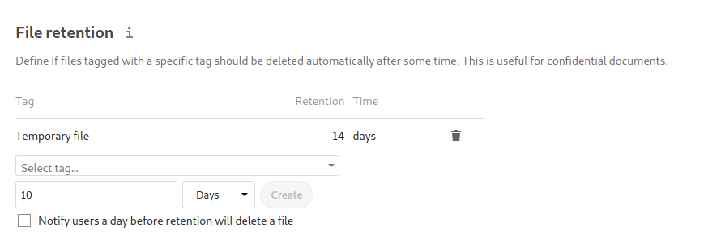

Retention of files¶
Nextcloud’s Files Retention app allows to automatically delete files that are tagged with a collaborative tag and have a certain age.
Example¶
After installing the Retention app as described in Apps management navigate to the configuration and locate the Workflow settings.

The rule from the example will delete all files tagged with Temporary file after 14 days.
Common misconfigurations¶
Public collaborative tag¶
Similar to Files access control retention should use restricted or invisible
tags. Otherwise any user can remove the tag and the file is not removed after the given
period. Use Automated tagging of files to assign such tags to newly uploaded files.
File age¶
Currently retention is based on the creation date of the file. The sync client sends
the original creation date to the server, while uploading through the web interface
will create a new file with a new creation date.
We hope to be able to add a upload date to the filesystem soon, which would make more
sense. Until then this potentially unexpected behavior has to be taken into account.